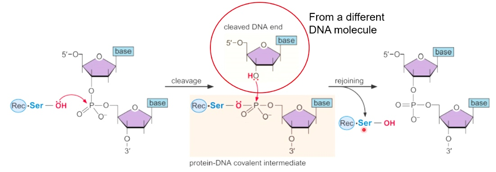
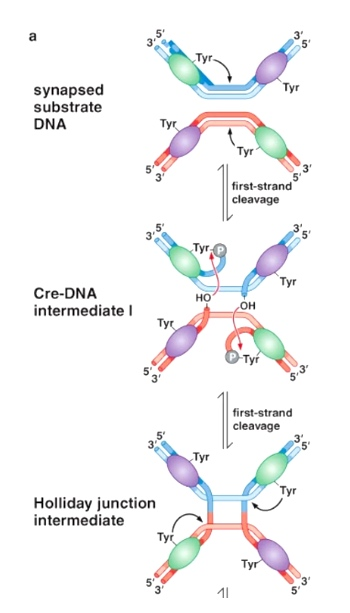

Site-specific Recombination
Comparing homologous recombination, site specific recombination, and transposition
HR proteins include:
- Resection mechinary
- Recombinases
- Helicases
- Proteins to catalyze the crossover.
A general mechanism of site-specific recombination
Starting substrate: two different DNA helix. Recombination sites are in the middle of them. In the end. the product is a crossover of them.
The crossover occurs in the context of recombination recognition sequence. Two arrows represent the inverted repeats that the recombination subunits will bind to.
The crossover region is different from the recombinase recognition sequences is where the recombination and cutting will occur.
The recombinase will bind at the inverted repeats, and cut at the crossover region and it will catalyze the recombination region.
All of these are carried by the recombinase, the protein itself.
Recombination recognition sequence are recombinase specific
Different sequence are specific for different type of recombinase.
In the pic, the Cre and FLP recombinase will bind to the inverted repeats. Then, it will cut at the core.
FLP - FRT
Cre - IoxP
Site-specific recombination uses a covalent intermediate mechanism

Two different types of recombinases
1. Serine recombinases
Cleave all four strands prior to exchange
Recombinase will cut four strands simultaneously.
Then swap the DNA partners.
Crystal Structure of Serine Recombinases
In the process of carrying out this reaction.
The reason why serine recombinase can swap DNA strands is: the alpha helical interface is extremely hydrophobic and slippery.
Tyrosine recombinases cleave two strands at a time
First the tyrosine recombinases cleave two top strands.
The cleavage will cause the formation of holiday junction.
Then cut the other two strands.
Cleave two strands, swap and ligate; then cleave two strands, swap and ligate.
3D view of tyrosine recombinase

Possible products of site-specific recombination
Because the FRT are inverted, they will form a loop(in the same orientation).
Recombinase recognition sequences are inverted
Then crossover will be created in the inverted region.
Recombinase recognition sequences are in the same direction
The recogition sequences are directly repeated from the other.
After crossover, the strand will end with one deleted molecule without ABC, and a circular molecule with ABC.
Note this reaction can be reverted. Which means if we want to insert a piece, we can start form a linear molecule and circular molecule.
Example #1: Cre Recombinase
Normal function - promotes circularization promotes circularization of Phage P1 genome during lysogenic infection.
After the linear genome of phage comes into E.coli, it becomes circular, so the phage can either
- go on and form lysogenic pathway(infection), which means the DNA can be outside or in the bacteria genome.
- Of the genome can get copied lots of times during the lytic pathway, then the bacteria phage will create lots of copies of it and explode.
How does the reaction being catalyzed from linear to circular DNA?
Application: targeting genes for deletion in mice using Cre-lox
In the genome of the mice that you would like to target for knockout. We can creat mice in which the gene is flanked by the lox P recombinase recogition sequences.
We can make them to mics that are expression Cre with a cell-specific promoter.
The circular molecule cannot be propagated within the gemone. This is the way you can make tissue specific knockouts within the mice.
Example2: The FLP-FRT system
Normal function: used during replication of the 2 micron plasids in yeast.
If there is recombinase after start of DNA replication, the two forks will move in the same direction.
Then use recombination again to stop the replication.
Thus, using FLP-FRT recombination coupled with DNA replication, you can turn one molecules into many more molecules.
Biotechnology applications of the FLP-FRT system
If we have a gene only want to express in certain tissues, we can create a construct where that gene is under the control of a promoter.
We can put put two FRT sites between promoter and stop, stop and gene. Thus, we can only transcribe and express the gene only in tissue that we are expressing.
Also we can insert a gene into genome.
Also, we can replace one Allele with another.
Conservative Site-Specific Reconbination
DNA Cut and Paste Transposition
Transpose DNA segments are DNA segments that can move from one site in DNA to another site.
A DNA cut and paste transpose element moves by excision followed by integration.
Transposition begins when the transposase A is binds to terminal inverted repeat sequences at each end of the transposon. The transpose molecule then pair bring it together the transposon ends and activating the transpose A's activity.
The transpose A then excises the element by generating double strand breaks in the DNA at each end of the element.
Transposase A is then directly joins the transposon ends to the target site in the target DNA.